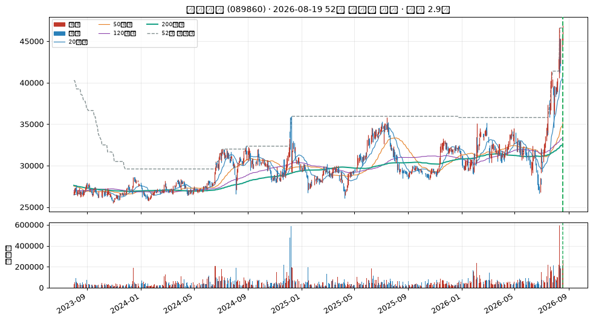
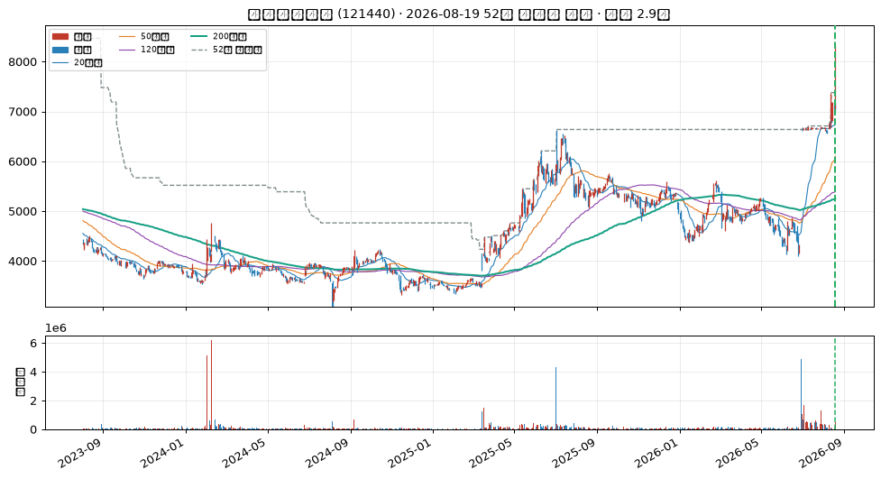
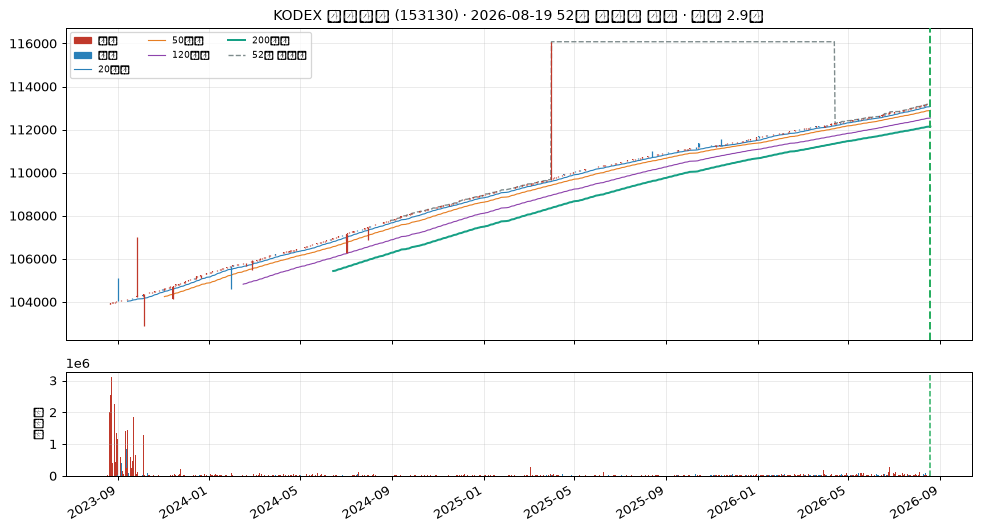
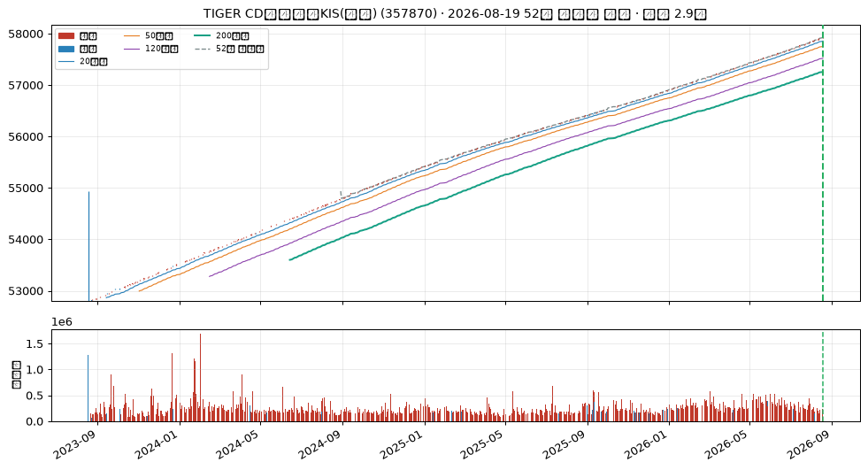
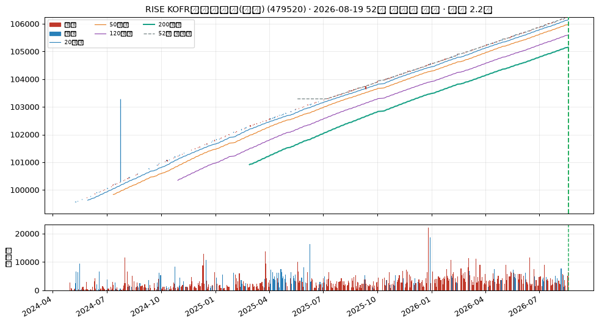

운송장비 임대업
업종 참고: RS 평균 데이터 부족 · 오늘 신호 1건
🧪 자체 섹터 분류(실험적, 참고용): 기타 금융업 (롯데렌탈·한일홀딩스 등 17종목)
섹터 내 RS 순위: 1/17위 (RS 88/99)
섹터 1~3위: 롯데렌탈(88), 한일홀딩스(73), KT&G(68)
※ 자체 상관관계 계산 — 검증 시 기준업종 11개 중 8개 정확, 시간에 따라 자주 바뀔 수 있음(3개월 안정성 실측 낮음)
종가 46,850 · 거래대금 124억
고점대비 +0.5%6개월 +41.1%갱신 4회거래량비 1.6x
손절 43,570 | 목표 56,688 | 수량 213주

CC — 분기 실적 성장 데이터 없음
데이터 없음 — DART 조회 실패 또는 공시 없음 (DART_API_KEY 필요)
AA — 연간 실적 성장 데이터 없음
데이터 없음 — DART 조회 실패 또는 사업보고서 없음 (DART_API_KEY 필요)
NN — 신고가·모멘텀 우수
고점대비 +0.5% · 최근 20일 중 4회 갱신 · 6개월 모멘텀 +41.1%
SS — 수급(거래량) 우수
20일 평균 대비 1.64배
유통주식수·순매수 데이터는 미보유 (거래량으로만 근사)
LL — 주도주(상대강도) 우수
RS 등급 88/99 (유니버스 1000종목 중 백분위) · 지수대비 +9.9%p (126일)
상위 시가총액 유니버스 기준 — KRX 전체 대비 백분위 아님
II — 기관·외국인 수급 양호
20일 순매수 +3.58% (거래대금 대비) · 최근절반 -0.75% vs 이전절반 +12.46% (약화) · 순매수 10일 · 누적 +51.0억원
한국투자증권 공식 API(KIS) 기준 · 기관+외국인 합산, 기타법인 제외로 거래대금은 소폭 과소추정 · 임계값은 아직 실측 검증 전 잠정치 — 수급 이력이 쌓이면 다른 지표와 같은 방식으로 구분력을 측정해 조정 예정 · 최근 유입이 이전보다 약해져 한 단계 낮춤
MM — 시장방향 미흡
KOSPI 지수가 60일선 아래
실제 매매 필터로는 미적용(표시 전용) — 종목 선별보다 지수 자체 타이밍이 더 효율적이라는 자체 검증 결과 있음 (reports/vs_kospi.md)
상품 중개업
업종 참고: RS 평균 62/99(업종 중 상위 18%) · 오늘 신호 1건 · 코스피 대비 -12.3%p(126일)
🧪 자체 섹터 분류(실험적, 참고용): 기타 화학제품 제조업 (인바디·골프존홀딩스 등 18종목)
섹터 내 RS 순위: 2/18위 (RS 90/99)
섹터 1~3위: 인바디(95), 골프존홀딩스(90), 가비아(87)
※ 자체 상관관계 계산 — 검증 시 기준업종 11개 중 8개 정확, 시간에 따라 자주 바뀔 수 있음(3개월 안정성 실측 낮음)
종가 7,990 · 거래대금 40억
고점대비 +8.3%6개월 +60.3%갱신 3회거래량비 1.8x
손절 7,431 | 목표 9,668 | 수량 1,251주

CC — 분기 실적 성장 데이터 없음
데이터 없음 — DART 조회 실패 또는 공시 없음 (DART_API_KEY 필요)
AA — 연간 실적 성장 데이터 없음
데이터 없음 — DART 조회 실패 또는 사업보고서 없음 (DART_API_KEY 필요)
NN — 신고가·모멘텀 우수
고점대비 +8.3% · 최근 20일 중 3회 갱신 · 6개월 모멘텀 +60.3%
SS — 수급(거래량) 우수
20일 평균 대비 1.80배
유통주식수·순매수 데이터는 미보유 (거래량으로만 근사)
LL — 주도주(상대강도) 우수
RS 등급 90/99 (유니버스 1000종목 중 백분위) · 지수대비 +68.6%p (126일)
상위 시가총액 유니버스 기준 — KRX 전체 대비 백분위 아님
II — 기관·외국인 수급 양호
20일 순매수 +7.40% (거래대금 대비) · 최근절반 +2.74% vs 이전절반 +9.58% (약화) · 순매수 11일 · 누적 +27.1억원
한국투자증권 공식 API(KIS) 기준 · 기관+외국인 합산, 기타법인 제외로 거래대금은 소폭 과소추정 · 임계값은 아직 실측 검증 전 잠정치 — 수급 이력이 쌓이면 다른 지표와 같은 방식으로 구분력을 측정해 조정 예정 · 최근 유입이 이전보다 약해져 한 단계 낮춤
MM — 시장방향 양호
KOSDAQ 지수가 20일선 위
실제 매매 필터로는 미적용(표시 전용) — 종목 선별보다 지수 자체 타이밍이 더 효율적이라는 자체 검증 결과 있음 (reports/vs_kospi.md)
정보없음
🧪 자체 섹터 분류(실험적, 참고용): 기초 화학물질 제조업 (ACE 머니마켓액티브·TIGER 머니마켓액티브 등 28종목)
섹터 내 RS 순위: 26/28위 (RS 61/99)
섹터 1~3위: ACE 머니마켓액티브(65), TIGER 머니마켓액티브(64), RISE 머니마켓액티브(64)
※ 자체 상관관계 계산 — 검증 시 기준업종 11개 중 8개 정확, 시간에 따라 자주 바뀔 수 있음(3개월 안정성 실측 낮음)
종가 113,205 · 거래대금 8.0억
고점대비 +0.0%6개월 +1.2%갱신 10회거래량비 0.2x
손절 105,281 | 목표 136,978 | 수량 88주

CC — 분기 실적 성장 데이터 없음
데이터 없음 — DART 조회 실패 또는 공시 없음 (DART_API_KEY 필요)
AA — 연간 실적 성장 데이터 없음
데이터 없음 — DART 조회 실패 또는 사업보고서 없음 (DART_API_KEY 필요)
NN — 신고가·모멘텀 우수
고점대비 +0.0% · 최근 20일 중 10회 갱신 · 6개월 모멘텀 +1.2%
SS — 수급(거래량) 미흡
20일 평균 대비 0.19배
유통주식수·순매수 데이터는 미보유 (거래량으로만 근사)
LL — 주도주(상대강도) 보통
RS 등급 61/99 (유니버스 1000종목 중 백분위) · 지수대비 -28.5%p (126일)
상위 시가총액 유니버스 기준 — KRX 전체 대비 백분위 아님
II — 기관·외국인 수급 우수
20일 순매수 +10.06% (거래대금 대비) · 최근절반 +11.59% vs 이전절반 +7.97% (개선) · 순매수 12일 · 누적 +80.9억원
한국투자증권 공식 API(KIS) 기준 · 기관+외국인 합산, 기타법인 제외로 거래대금은 소폭 과소추정 · 임계값은 아직 실측 검증 전 잠정치 — 수급 이력이 쌓이면 다른 지표와 같은 방식으로 구분력을 측정해 조정 예정
MM — 시장방향 미흡
KOSPI 지수가 60일선 아래
실제 매매 필터로는 미적용(표시 전용) — 종목 선별보다 지수 자체 타이밍이 더 효율적이라는 자체 검증 결과 있음 (reports/vs_kospi.md)
TIGER CD금리투자KIS(합성) (357870)
KRX
정보없음
🧪 자체 섹터 분류(실험적, 참고용): 기초 화학물질 제조업 (ACE 머니마켓액티브·TIGER 머니마켓액티브 등 28종목)
섹터 내 RS 순위: 12/28위 (RS 63/99)
섹터 1~3위: ACE 머니마켓액티브(65), TIGER 머니마켓액티브(64), RISE 머니마켓액티브(64)
※ 자체 상관관계 계산 — 검증 시 기준업종 11개 중 8개 정확, 시간에 따라 자주 바뀔 수 있음(3개월 안정성 실측 낮음)
종가 57,925 · 거래대금 127억
고점대비 +0.0%6개월 +1.5%갱신 19회거래량비 0.9x
손절 53,870 | 목표 70,089 | 수량 172주

CC — 분기 실적 성장 데이터 없음
데이터 없음 — DART 조회 실패 또는 공시 없음 (DART_API_KEY 필요)
AA — 연간 실적 성장 데이터 없음
데이터 없음 — DART 조회 실패 또는 사업보고서 없음 (DART_API_KEY 필요)
NN — 신고가·모멘텀 우수
고점대비 +0.0% · 최근 20일 중 19회 갱신 · 6개월 모멘텀 +1.5%
SS — 수급(거래량) 미흡
20일 평균 대비 0.91배
유통주식수·순매수 데이터는 미보유 (거래량으로만 근사)
LL — 주도주(상대강도) 보통
RS 등급 63/99 (유니버스 1000종목 중 백분위) · 지수대비 -28.2%p (126일)
상위 시가총액 유니버스 기준 — KRX 전체 대비 백분위 아님
II — 기관·외국인 수급 양호
20일 순매수 +3.59% (거래대금 대비) · 최근절반 -5.77% vs 이전절반 +10.78% (약화) · 순매수 13일 · 누적 +100.1억원
한국투자증권 공식 API(KIS) 기준 · 기관+외국인 합산, 기타법인 제외로 거래대금은 소폭 과소추정 · 임계값은 아직 실측 검증 전 잠정치 — 수급 이력이 쌓이면 다른 지표와 같은 방식으로 구분력을 측정해 조정 예정 · 최근 유입이 이전보다 약해져 한 단계 낮춤
MM — 시장방향 미흡
KOSPI 지수가 60일선 아래
실제 매매 필터로는 미적용(표시 전용) — 종목 선별보다 지수 자체 타이밍이 더 효율적이라는 자체 검증 결과 있음 (reports/vs_kospi.md)
RISE KOFR금리액티브(합성) (479520)
KRX
정보없음
🧪 자체 섹터 분류(실험적, 참고용): 기초 화학물질 제조업 (ACE 머니마켓액티브·TIGER 머니마켓액티브 등 28종목)
섹터 내 RS 순위: 25/28위 (RS 62/99)
섹터 1~3위: ACE 머니마켓액티브(65), TIGER 머니마켓액티브(64), RISE 머니마켓액티브(64)
※ 자체 상관관계 계산 — 검증 시 기준업종 11개 중 8개 정확, 시간에 따라 자주 바뀔 수 있음(3개월 안정성 실측 낮음)
종가 106,255 · 거래대금 6.7억
고점대비 +0.0%6개월 +1.3%갱신 15회거래량비 1.9x
손절 98,817 | 목표 128,569 | 수량 94주

CC — 분기 실적 성장 데이터 없음
데이터 없음 — DART 조회 실패 또는 공시 없음 (DART_API_KEY 필요)
AA — 연간 실적 성장 데이터 없음
데이터 없음 — DART 조회 실패 또는 사업보고서 없음 (DART_API_KEY 필요)
NN — 신고가·모멘텀 우수
고점대비 +0.0% · 최근 20일 중 15회 갱신 · 6개월 모멘텀 +1.3%
SS — 수급(거래량) 우수
20일 평균 대비 1.88배
유통주식수·순매수 데이터는 미보유 (거래량으로만 근사)
LL — 주도주(상대강도) 보통
RS 등급 62/99 (유니버스 1000종목 중 백분위) · 지수대비 -28.3%p (126일)
상위 시가총액 유니버스 기준 — KRX 전체 대비 백분위 아님
II — 기관·외국인 수급 우수
20일 순매수 +26.29% (거래대금 대비) · 최근절반 +27.57% vs 이전절반 +24.60% (개선) · 순매수 14일 · 누적 +20.1억원
한국투자증권 공식 API(KIS) 기준 · 기관+외국인 합산, 기타법인 제외로 거래대금은 소폭 과소추정 · 임계값은 아직 실측 검증 전 잠정치 — 수급 이력이 쌓이면 다른 지표와 같은 방식으로 구분력을 측정해 조정 예정
MM — 시장방향 미흡
KOSPI 지수가 60일선 아래
실제 매매 필터로는 미적용(표시 전용) — 종목 선별보다 지수 자체 타이밍이 더 효율적이라는 자체 검증 결과 있음 (reports/vs_kospi.md)